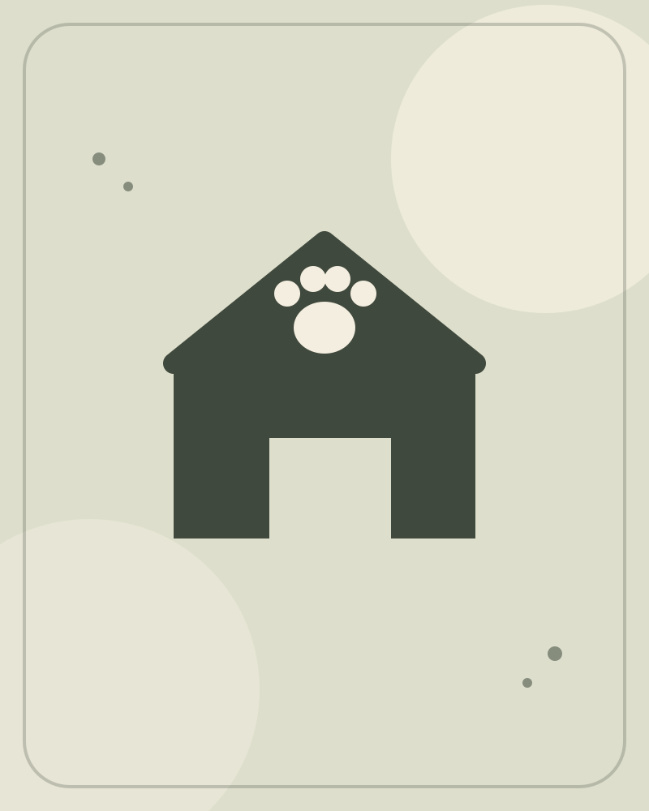
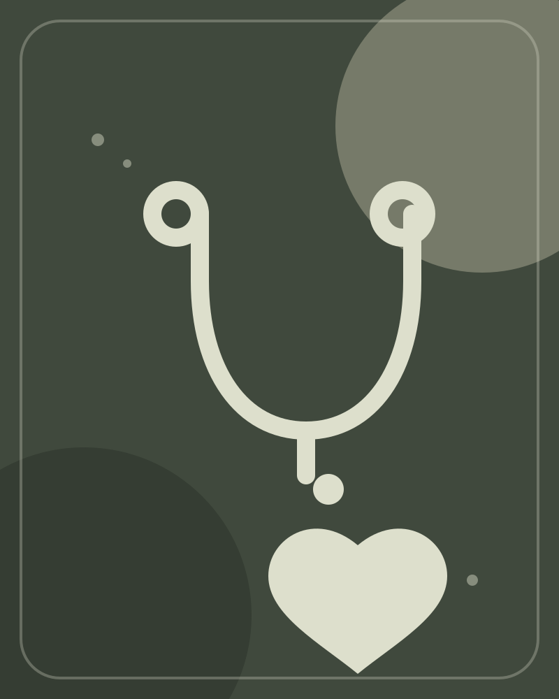
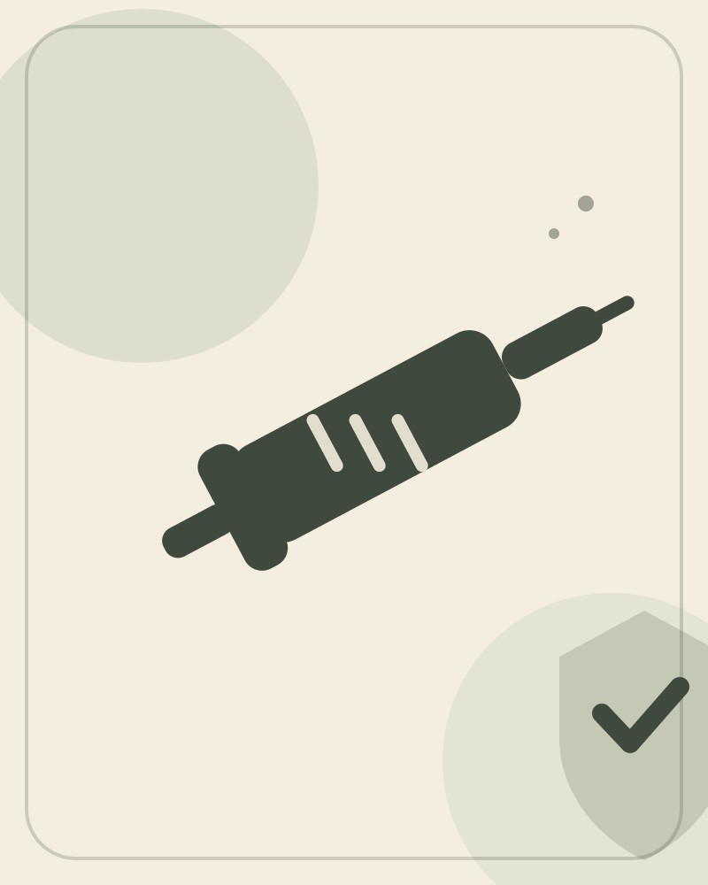
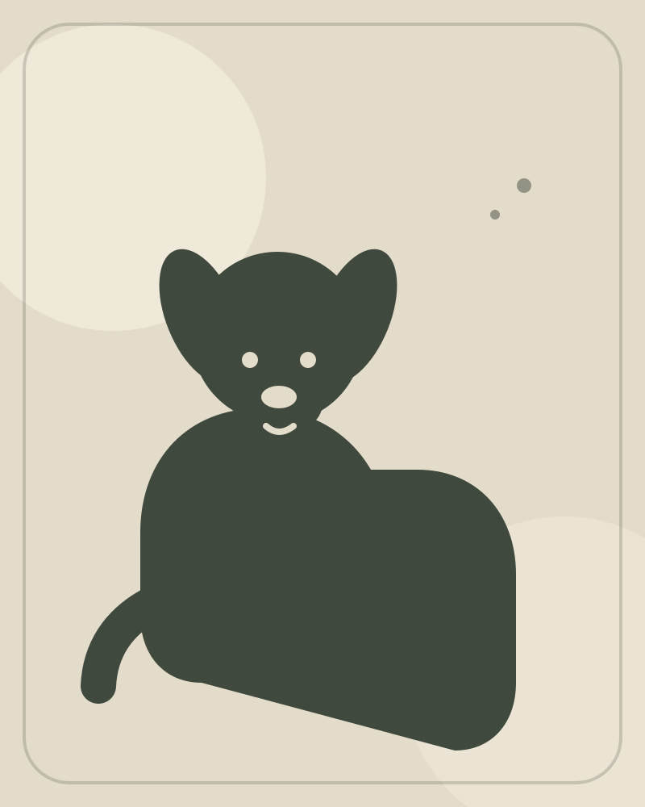
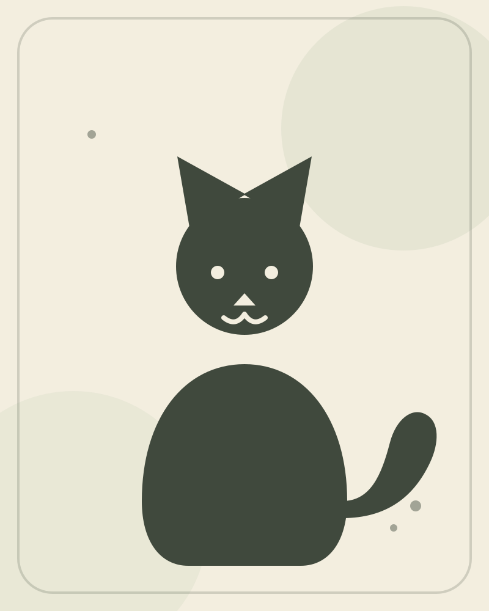
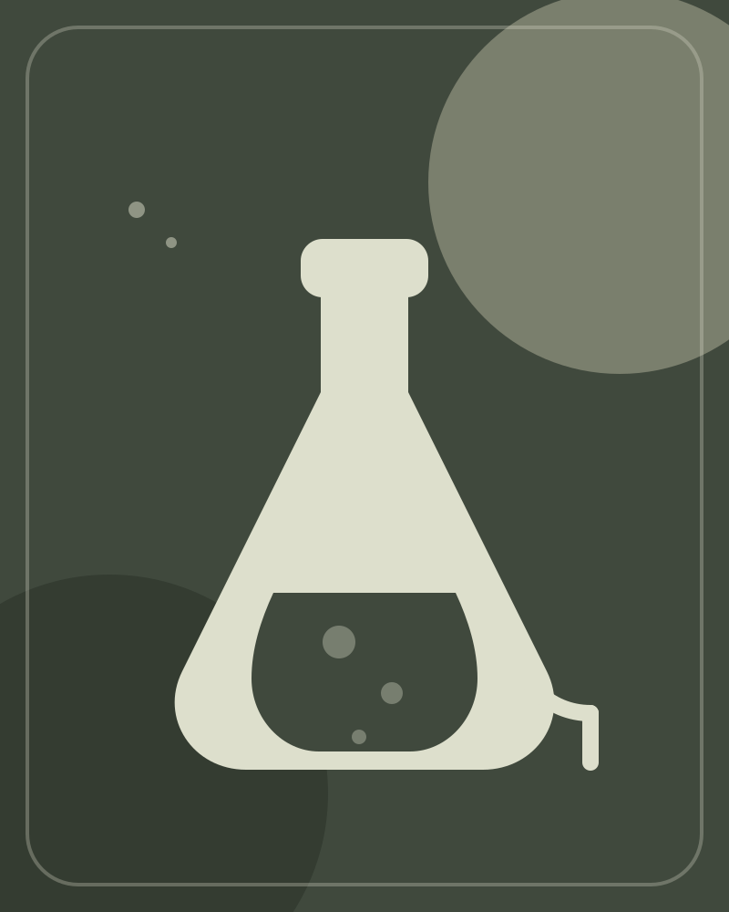
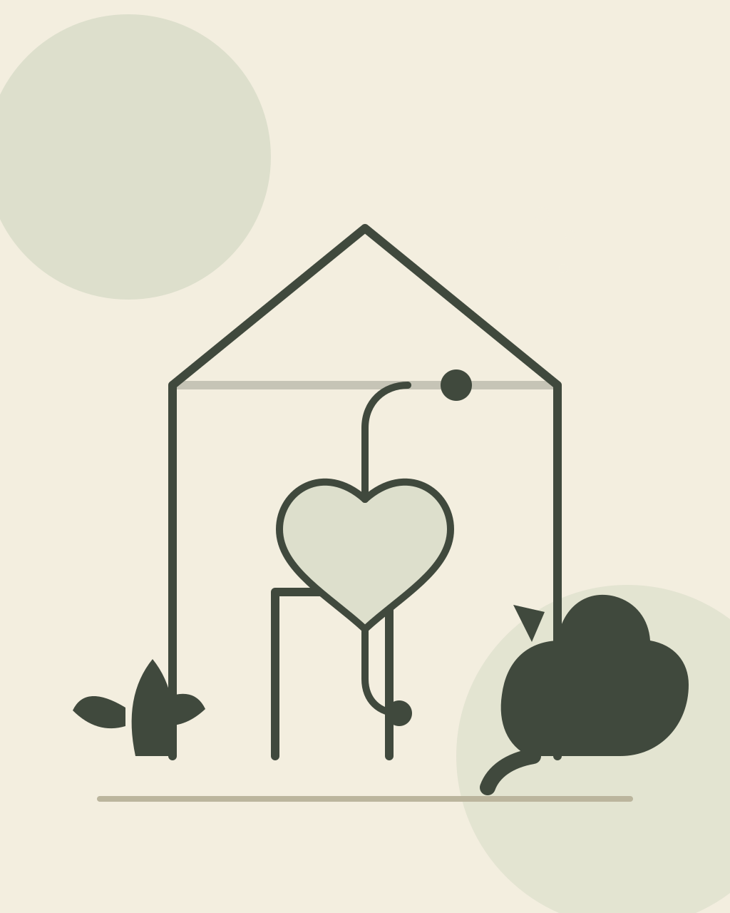
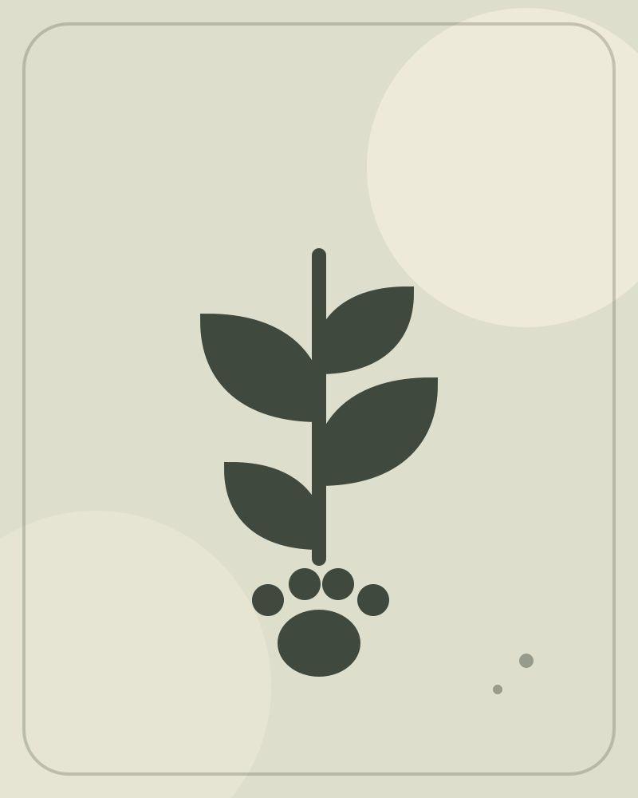

Consulta pediátrica
Os primeiros meses definem a saúde futura: avaliação completa, alimentação, socialização e orientação para o tutor.
Carregando
Dra. Amanda HübnerConsultas, vacinas e exames no conforto do seu lar — para cães e gatos.
Um pouco da rotina, em movimento.






Sem trânsito, sem espera e sem contato com outros animais — e uma avaliação mais natural do comportamento do seu pet.

Em ambiente conhecido o pet fica mais seguro — e estresse baixo protege a imunidade.
Horário agendado, no seu sofá.
Rotina, histórico e espécie guiam cada consulta.
Os primeiros sinais são pequenos. Cuidar antes é o melhor remédio.
Os primeiros meses definem a saúde futura: avaliação completa, alimentação, socialização e orientação para o tutor.
Definido pela idade, estilo de vida e riscos de exposição — aplicação em casa e carteira sempre em dia.
Check-up completo mesmo sem sinais de doença: detecção precoce e orientação de alimentação, ambiente e higiene.
Acompanhamento do pet idoso — dor, mobilidade e qualidade de vida — sem o estresse do deslocamento.
"O cuidado vai muito além do tratamento: começa com escuta, respeito e vínculo."
Olá! Sou Amanda Hübner, médica-veterinária apaixonada por saúde preventiva e pelo bem-estar de cães e gatos. Atendo em domicílio para que cada consulta aconteça com calma, no ambiente em que o seu pet se sente seguro. Meu compromisso é explicar cada etapa, montar um plano de cuidado possível para a sua rotina e acompanhar de perto entre as visitas.
Não achou sua resposta? Mande uma mensagem.
Por isso a prevenção é o melhor remédio. Agende a visita da Dra. Amanda.
